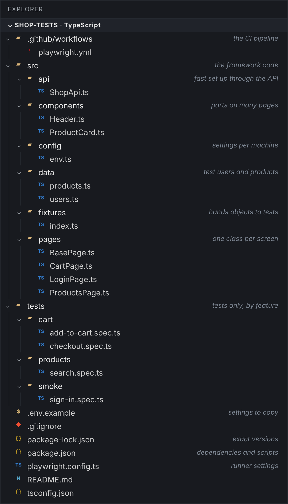
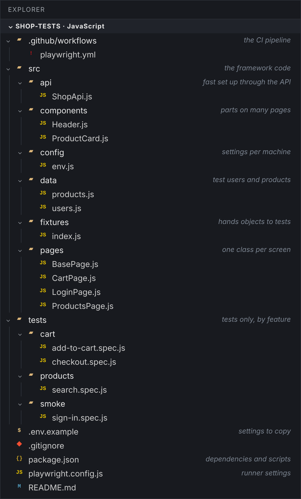
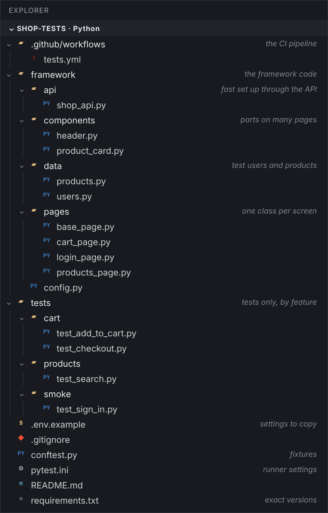
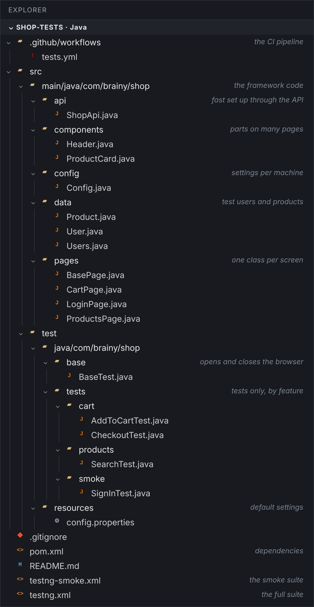

Build the framework a company team would use, in TypeScript, JavaScript, Python and Java. Settings from the environment, test data, API helpers, page objects, fixtures and tagged tests, with a picture of every project folder.
A framework is the shared code that lets a team write many short tests: where the app is, who signs in, how each page works and how each test starts. Once it exists, a new test is a few lines.
A test framework is the code around your tests that makes hundreds of them easy to write, read and run: settings, test data, helpers, page objects and fixtures. The tests themselves become short. This chapter builds the same framework in all four languages, in the layout teams use at work, and runs it against the shop at every step.
Here is where we will end up. Pick your language at the top of the page to see its project.




| Folder | TypeScript and JavaScript | Python | Java |
|---|---|---|---|
| framework code | src/ | framework/ | src/main/java/.../shop |
| settings | src/config/env.ts | framework/config.py | config/Config.java with config.properties |
| page objects | src/pages/ | framework/pages/ | .../shop/pages/ |
| fixtures | src/fixtures/index.ts | conftest.py | base/BaseTest.java |
| tests | tests/<feature>/*.spec.ts | tests/<feature>/test_*.py | src/test/java/.../tests/<feature>/*Test.java |
| runner settings | playwright.config.ts | pytest.ini | pom.xml and testng.xml |
Start with an empty project that can find tests and knows where the app is. Three rules matter from the first day.
| Rule | Why |
|---|---|
| settings come from the environment, with a local default | the same code runs on a laptop, in CI and against staging |
| secrets never go in the repository | passwords live in CI secrets and in a local .env that Git ignores |
| exact versions of every package | every machine, and every CI run, uses the same Playwright |
<project xmlns="http://maven.apache.org/POM/4.0.0"> <modelVersion>4.0.0</modelVersion> <groupId>com.brainy</groupId> <artifactId>shop-tests</artifactId> <version>1.0.0</version> <properties> <maven.compiler.release>21</maven.compiler.release> <project.build.sourceEncoding>UTF-8</project.build.sourceEncoding> <suite>testng.xml</suite> <!-- mvn test -Dsuite=testng-smoke.xml runs another suite --> </properties> <dependencies> <dependency> <groupId>com.microsoft.playwright</groupId> <artifactId>playwright</artifactId> <version>1.63.0</version> </dependency> <dependency> <groupId>org.testng</groupId> <artifactId>testng</artifactId> <version>7.11.0</version> <scope>test</scope> </dependency> </dependencies> <build> <plugins> <plugin> <groupId>org.apache.maven.plugins</groupId> <artifactId>maven-surefire-plugin</artifactId> <version>3.5.4</version> <configuration> <suiteXmlFiles> <suiteXmlFile>${suite}</suiteXmlFile> </suiteXmlFiles> </configuration> </plugin> </plugins> </build> </project>
<!DOCTYPE suite SYSTEM "https://testng.org/testng-1.0.dtd"> <!-- Every test, two classes at a time. Each class gets its own browser on its own thread. --> <suite name="Brainy Shop" parallel="classes" thread-count="2"> <test name="All tests"> <packages> <package name="com.brainy.shop.tests.*"/> </packages> </test> </suite>
<!DOCTYPE suite SYSTEM "https://testng.org/testng-1.0.dtd"> <!-- Only the tests in the smoke group, for every commit --> <suite name="Brainy Shop smoke" parallel="classes" thread-count="2"> <test name="Smoke"> <groups> <run> <include name="smoke"/> </run> </groups> <packages> <package name="com.brainy.shop.tests.*"/> </packages> </test> </suite>
# Default settings. A -D option or an environment variable overrides each one. baseUrl=http://localhost:4173 headless=true
package com.brainy.shop.config; import java.io.IOException; import java.io.InputStream; import java.util.Properties; // Settings that change between machines (a laptop, CI, staging) live here and nowhere else. // Order: -DbaseUrl=..., then the BASE_URL environment variable, then config.properties. public final class Config { private static final Properties FILE = new Properties(); static { try (InputStream in = Config.class.getResourceAsStream("/config.properties")) { if (in != null) FILE.load(in); } catch (IOException e) { throw new IllegalStateException("Cannot read config.properties", e); } } private Config() {} public static String get(String key, String envName) { String value = System.getProperty(key); if (value == null) value = System.getenv(envName); if (value == null) value = FILE.getProperty(key); return value; } public static String baseUrl() { return get("baseUrl", "BASE_URL"); } public static boolean headless() { return Boolean.parseBoolean(get("headless", "HEADLESS")); } }
$ mvn -q test-compile && find src/test -name "*Test.java" | sort
src/test/java/com/brainy/shop/base/BaseTest.java src/test/java/com/brainy/shop/tests/cart/AddToCartTest.java src/test/java/com/brainy/shop/tests/cart/CheckoutTest.java src/test/java/com/brainy/shop/tests/products/SearchTest.java src/test/java/com/brainy/shop/tests/smoke/SignInTest.java
[pytest] testpaths = tests pythonpath = . addopts = --browser chromium --tracing retain-on-failure --screenshot only-on-failure markers = smoke: quick checks that run on every commit cart: the cart and checkout
import os from dotenv import load_dotenv load_dotenv() # reads .env when it exists, so a laptop and CI can use different settings # Settings that change between machines (a laptop, CI, staging) live here and nowhere else BASE_URL = os.getenv("BASE_URL", "http://localhost:4173")
$ pytest --collect-only -q
tests/cart/test_add_to_cart.py::test_adds_two_products_from_their_cards[chromium] tests/cart/test_checkout.py::test_places_an_order_for_a_cart_filled_through_the_api[chromium] tests/products/test_search.py::test_finds_the_lamp_by_name[chromium] tests/products/test_search.py::test_says_so_when_nothing_matches[chromium] tests/products/test_search.py::test_the_notebook_cannot_be_added[chromium] tests/smoke/test_sign_in.py::test_asha_signs_in_with_the_right_password[chromium] tests/smoke/test_sign_in.py::test_a_wrong_password_shows_an_error[chromium] 7 tests collected in 0.02s
{
"name": "shop-tests",
"private": true,
"type": "module",
"scripts": {
"test": "playwright test",
"test:smoke": "playwright test --grep @smoke",
"report": "playwright show-report"
},
"devDependencies": {
"@playwright/test": "1.63.0",
"dotenv": "18.0.9"
}
}import 'dotenv/config'; import { defineConfig, devices } from '@playwright/test'; import { env } from './src/config/env.js'; export default defineConfig({ testDir: './tests', fullyParallel: true, forbidOnly: !!process.env.CI, // a forgotten test.only fails the CI run retries: process.env.CI ? 2 : 0, workers: process.env.CI ? 2 : undefined, reporter: process.env.CI ? [['list'], ['html', { open: 'never' }], ['junit', { outputFile: 'results/junit.xml' }]] : [['list'], ['html', { open: 'never' }]], use: { baseURL: env.baseURL, trace: 'on-first-retry', screenshot: 'only-on-failure', video: 'retain-on-failure', }, projects: [ { name: 'chromium', use: { ...devices['Desktop Chrome'] } }, // { name: 'firefox', use: { ...devices['Desktop Firefox'] } }, // { name: 'webkit', use: { ...devices['Desktop Safari'] } }, ], });
// Settings that change between machines (a laptop, CI, staging) live here and nowhere else export const env = { baseURL: process.env.BASE_URL ?? 'http://localhost:4173', };
$ npx playwright test --list
Listing tests: [chromium] › cart/add-to-cart.spec.js:5:3 › cart › adds two products from their cards [chromium] › cart/checkout.spec.js:5:3 › checkout › places an order for a cart filled through the API [chromium] › products/search.spec.js:5:3 › product search › finds the lamp by name [chromium] › products/search.spec.js:12:3 › product search › says so when nothing matches [chromium] › products/search.spec.js:18:3 › product search › the notebook cannot be added [chromium] › smoke/sign-in.spec.js:5:3 › sign in › Asha signs in with the right password [chromium] › smoke/sign-in.spec.js:11:3 › sign in › a wrong password shows an error Total: 7 tests in 4 files
{
"name": "shop-tests",
"private": true,
"type": "module",
"scripts": {
"test": "playwright test",
"test:smoke": "playwright test --grep @smoke",
"report": "playwright show-report"
},
"devDependencies": {
"@playwright/test": "1.63.0",
"@types/node": "22.20.5",
"dotenv": "18.0.9",
"typescript": "5.9.3"
}
}import 'dotenv/config'; import { defineConfig, devices } from '@playwright/test'; import { env } from './src/config/env'; export default defineConfig({ testDir: './tests', fullyParallel: true, forbidOnly: !!process.env.CI, // a forgotten test.only fails the CI run retries: process.env.CI ? 2 : 0, workers: process.env.CI ? 2 : undefined, reporter: process.env.CI ? [['list'], ['html', { open: 'never' }], ['junit', { outputFile: 'results/junit.xml' }]] : [['list'], ['html', { open: 'never' }]], use: { baseURL: env.baseURL, trace: 'on-first-retry', screenshot: 'only-on-failure', video: 'retain-on-failure', }, projects: [ { name: 'chromium', use: { ...devices['Desktop Chrome'] } }, // { name: 'firefox', use: { ...devices['Desktop Firefox'] } }, // { name: 'webkit', use: { ...devices['Desktop Safari'] } }, ], });
// Settings that change between machines (a laptop, CI, staging) live here and nowhere else export const env = { baseURL: process.env.BASE_URL ?? 'http://localhost:4173', };
$ npx playwright test --list
Listing tests: [chromium] › cart/add-to-cart.spec.ts:5:3 › cart › adds two products from their cards [chromium] › cart/checkout.spec.ts:5:3 › checkout › places an order for a cart filled through the API [chromium] › products/search.spec.ts:5:3 › product search › finds the lamp by name [chromium] › products/search.spec.ts:12:3 › product search › says so when nothing matches [chromium] › products/search.spec.ts:18:3 › product search › the notebook cannot be added [chromium] › smoke/sign-in.spec.ts:5:3 › sign in › Asha signs in with the right password [chromium] › smoke/sign-in.spec.ts:11:3 › sign in › a wrong password shows an error Total: 7 tests in 4 files
The runner found all seven tests in the folders it was told to look in, before running any of them. That is the first thing to check in a new framework. Every setting that changes between a laptop and CI, here the shop address, comes from one place: an environment variable if it is set, otherwise a default. The Java project compiled, and its test classes sit in one package per feature.
Now add the layers, from the bottom up. Each one depends only on the layers below it, so a change in one place does not ripple through the suite.
| Layer | Its one job | In this framework |
|---|---|---|
| data | test users and products | users, products |
| API helper | fast set up without the browser | ShopApi: signIn, addToCart |
| components | parts on many pages | Header, ProductCard |
| page objects | one screen each | BasePage, LoginPage, ProductsPage, CartPage |
| fixtures | hand objects and a session to each test | test.extend, conftest.py, BaseTest |
package com.brainy.shop.data; public record User(String email, String password, String name) { public User withPassword(String other) { return new User(email, other, name); } }
package com.brainy.shop.data; // Test accounts. Real projects read passwords from CI secrets, never from the repository. public final class Users { public static final User ASHA = new User("asha@shop.example", secret("ASHA_PASSWORD", "s3cret"), "Asha"); public static final User RAVI = new User("ravi@shop.example", secret("RAVI_PASSWORD", "admin123"), "Ravi"); private Users() {} private static String secret(String name, String fallback) { String value = System.getenv(name); return value == null || value.isEmpty() ? fallback : value; } }
package com.brainy.shop.data; // The products the tests use, with the ids the API expects public enum Product { GEL_PEN(1, "Gel pen", "₹20"), COFFEE_MUG(2, "Coffee mug", "₹199"), DESK_LAMP(3, "Desk lamp", "₹1,299"), NOTEBOOK(4, "Notebook", "₹60"), WATER_BOTTLE(5, "Water bottle", "₹349"); public final int id; public final String label; public final String price; Product(int id, String label, String price) { this.id = id; this.label = label; this.price = price; } }
package com.brainy.shop.api; import com.brainy.shop.data.User; import com.microsoft.playwright.APIRequestContext; import com.microsoft.playwright.APIResponse; import com.microsoft.playwright.options.RequestOptions; import java.util.Map; import java.util.regex.Matcher; import java.util.regex.Pattern; // Fast set up through the API, so UI tests only click what they are testing public class ShopApi { private final APIRequestContext request; public ShopApi(APIRequestContext request) { this.request = request; } public String signIn(User user) { APIResponse response = request.post("/api/login", RequestOptions.create().setData(Map.of("email", user.email(), "password", user.password()))); if (!response.ok()) throw new IllegalStateException("Sign in failed for " + user.email() + ": " + response.status()); Matcher token = Pattern.compile("\"token\":\"(\\w+)\"").matcher(response.text()); if (!token.find()) throw new IllegalStateException("No token in " + response.text()); return token.group(1); } public void addToCart(String token, int productId, int qty) { APIResponse response = request.post("/api/cart", RequestOptions.create() .setData(Map.of("productId", productId, "qty", qty)) .setHeader("Authorization", "Bearer " + token)); if (!response.ok()) throw new IllegalStateException("Could not add product " + productId + ": " + response.status()); } }
package com.brainy.shop.components; import com.microsoft.playwright.Locator; import com.microsoft.playwright.Page; import com.microsoft.playwright.options.AriaRole; // The header is on every page, so it is a component that every page object shares public class Header { public final Locator greeting; public final Locator cartCount; public final Locator signOut; public Header(Page page) { Locator root = page.getByRole(AriaRole.BANNER); this.greeting = root.locator("#hello"); this.cartCount = root.getByTestId("cart-count"); this.signOut = root.getByRole(AriaRole.LINK, new Locator.GetByRoleOptions().setName("Sign out")); } }
package com.brainy.shop.components; import com.microsoft.playwright.Locator; import com.microsoft.playwright.options.AriaRole; // One product card. Every locator starts from the card, so it never finds another product's button. public class ProductCard { public final Locator root; public final Locator price; public final Locator button; public ProductCard(Locator root) { this.root = root; this.price = root.locator(".price"); this.button = root.getByRole(AriaRole.BUTTON); } public void addToCart() { root.getByRole(AriaRole.BUTTON, new Locator.GetByRoleOptions().setName("Add to cart")).click(); } }
package com.brainy.shop.pages; import com.brainy.shop.components.Header; import com.microsoft.playwright.Page; // What every page shares: the browser page, its address and the header public abstract class BasePage { protected final Page page; private final String path; public final Header header; protected BasePage(Page page, String path) { this.page = page; this.path = path; this.header = new Header(page); } public void open() { page.navigate(path); } }
package com.brainy.shop.pages; import com.brainy.shop.data.User; import com.microsoft.playwright.Locator; import com.microsoft.playwright.Page; import com.microsoft.playwright.options.AriaRole; public class LoginPage extends BasePage { public final Locator email; public final Locator password; public final Locator signInButton; public final Locator error; public LoginPage(Page page) { super(page, "/login"); this.email = page.getByLabel("Email"); this.password = page.getByLabel("Password"); this.signInButton = page.getByRole(AriaRole.BUTTON, new Page.GetByRoleOptions().setName("Sign in")); this.error = page.getByRole(AriaRole.ALERT); } public void signIn(User user) { email.fill(user.email()); password.fill(user.password()); signInButton.click(); } }
package com.brainy.shop.pages; import com.brainy.shop.components.ProductCard; import com.microsoft.playwright.Locator; import com.microsoft.playwright.Page; import com.microsoft.playwright.options.AriaRole; public class ProductsPage extends BasePage { public final Locator search; public final Locator cards; public final Locator noResults; public ProductsPage(Page page) { super(page, "/products"); this.search = page.getByPlaceholder("Search products"); this.cards = page.getByRole(AriaRole.LIST, new Page.GetByRoleOptions().setName("Products")).getByRole(AriaRole.LISTITEM); this.noResults = page.getByText("No products match your search"); } public ProductCard card(String name) { return new ProductCard(cards.filter(new Locator.FilterOptions() .setHas(page.getByRole(AriaRole.HEADING, new Page.GetByRoleOptions().setName(name))))); } public void searchFor(String text) { search.fill(text); } }
package com.brainy.shop.pages; import com.microsoft.playwright.Locator; import com.microsoft.playwright.Page; import com.microsoft.playwright.options.AriaRole; public class CartPage extends BasePage { public final Locator items; public final Locator total; public final Locator placeOrderButton; public final Locator status; public CartPage(Page page) { super(page, "/cart"); this.items = page.getByRole(AriaRole.TABLE, new Page.GetByRoleOptions().setName("Cart items")).locator("tbody tr"); this.total = page.getByTestId("total"); this.placeOrderButton = page.getByRole(AriaRole.BUTTON, new Page.GetByRoleOptions().setName("Place order")); this.status = page.getByRole(AriaRole.STATUS); } public void placeOrder() { page.onceDialog(dialog -> dialog.accept()); // the shop asks to confirm the order placeOrderButton.click(); } }
package com.brainy.shop.base; import com.brainy.shop.api.ShopApi; import com.brainy.shop.config.Config; import com.brainy.shop.data.User; import com.brainy.shop.data.Users; import com.brainy.shop.pages.CartPage; import com.brainy.shop.pages.LoginPage; import com.brainy.shop.pages.ProductsPage; import com.microsoft.playwright.APIRequest; import com.microsoft.playwright.APIRequestContext; import com.microsoft.playwright.Browser; import com.microsoft.playwright.BrowserContext; import com.microsoft.playwright.BrowserType; import com.microsoft.playwright.Page; import com.microsoft.playwright.Playwright; import com.microsoft.playwright.Tracing; import org.testng.ITestResult; import org.testng.annotations.AfterClass; import org.testng.annotations.AfterMethod; import org.testng.annotations.BeforeClass; import org.testng.annotations.BeforeMethod; import java.nio.file.Paths; // Every test class extends BaseTest. TestNG runs classes in parallel, and each class has its own // Playwright and browser, so nothing is shared between threads. public abstract class BaseTest { private Playwright playwright; private Browser browser; private APIRequestContext request; private BrowserContext context; protected Page page; protected ShopApi api; protected LoginPage loginPage; protected ProductsPage productsPage; protected CartPage cartPage; @BeforeClass(alwaysRun = true) // alwaysRun: also when a group such as smoke is chosen public void launchBrowser() { playwright = Playwright.create(); browser = playwright.chromium().launch(new BrowserType.LaunchOptions().setHeadless(Config.headless())); request = playwright.request().newContext(new APIRequest.NewContextOptions().setBaseURL(Config.baseUrl())); api = new ShopApi(request); } @BeforeMethod(alwaysRun = true) public void openPage() { context = browser.newContext(new Browser.NewContextOptions().setBaseURL(Config.baseUrl())); context.tracing().start(new Tracing.StartOptions().setScreenshots(true).setSnapshots(true)); page = context.newPage(); loginPage = new LoginPage(page); productsPage = new ProductsPage(page); cartPage = new CartPage(page); } // A fresh session made through the API: fast, and no two tests share a cart protected String signInThroughApi(User user) { String token = api.signIn(user); context.addInitScript("window.localStorage.setItem('token', '" + token + "')"); return token; } protected String signInThroughApi() { return signInThroughApi(Users.ASHA); } // Report listeners call this when a test fails. TestNG calls them before closePage(), so the page is still open. public byte[] screenshot() { return page.screenshot(); } @AfterMethod(alwaysRun = true) public void closePage(ITestResult result) { if (result.isSuccess()) { context.tracing().stop(); } else { // keep a trace only for a failed test String name = getClass().getSimpleName() + "." + result.getMethod().getMethodName(); context.tracing().stop(new Tracing.StopOptions().setPath(Paths.get("traces", name + ".zip"))); } context.close(); } @AfterClass(alwaysRun = true) public void closeBrowser() { request.dispose(); playwright.close(); } }
$ mvn test
[INFO] ------------------------------------------------------- [INFO] T E S T S [INFO] ------------------------------------------------------- [INFO] Running TestSuite [INFO] Tests run: 7, Failures: 0, Errors: 0, Skipped: 0, Time elapsed: 8.502 s -- in TestSuite [INFO] [INFO] Results: [INFO] [INFO] Tests run: 7, Failures: 0, Errors: 0, Skipped: 0 [INFO] [INFO] ------------------------------------------------------------------------ [INFO] BUILD SUCCESS
import os from dataclasses import dataclass @dataclass(frozen=True) class User: email: str password: str name: str # Test accounts. Real projects read passwords from CI secrets, never from the repository. ASHA = User("asha@shop.example", os.getenv("ASHA_PASSWORD") or "s3cret", "Asha") RAVI = User("ravi@shop.example", os.getenv("RAVI_PASSWORD") or "admin123", "Ravi")
from dataclasses import dataclass @dataclass(frozen=True) class Product: id: int name: str price: str # The products the tests use, with the ids the API expects GEL_PEN = Product(1, "Gel pen", "₹20") COFFEE_MUG = Product(2, "Coffee mug", "₹199") DESK_LAMP = Product(3, "Desk lamp", "₹1,299") NOTEBOOK = Product(4, "Notebook", "₹60") WATER_BOTTLE = Product(5, "Water bottle", "₹349")
from playwright.sync_api import APIRequestContext from framework.data.users import User # Fast set up through the API, so UI tests only click what they are testing class ShopApi: def __init__(self, request: APIRequestContext): self.request = request def sign_in(self, user: User) -> str: response = self.request.post("/api/login", data={"email": user.email, "password": user.password}) assert response.ok, f"Sign in failed for {user.email}: {response.status}" return response.json()["token"] def add_to_cart(self, token: str, product_id: int, qty: int = 1): response = self.request.post("/api/cart", data={"productId": product_id, "qty": qty}, headers={"Authorization": f"Bearer {token}"}) assert response.ok, f"Could not add product {product_id}: {response.status}"
from playwright.sync_api import Page # The header is on every page, so it is a component that every page object shares class Header: def __init__(self, page: Page): root = page.get_by_role("banner") self.greeting = root.locator("#hello") self.cart_count = root.get_by_test_id("cart-count") self.sign_out = root.get_by_role("link", name="Sign out")
from playwright.sync_api import Locator # One product card. Every locator starts from the card, so it never finds another product's button. class ProductCard: def __init__(self, root: Locator): self.root = root self.price = root.locator(".price") self.button = root.get_by_role("button") def add_to_cart(self): self.root.get_by_role("button", name="Add to cart").click()
from playwright.sync_api import Page from framework.components.header import Header # What every page shares: the browser page, its address and the header class BasePage: path = "/" def __init__(self, page: Page): self.page = page self.header = Header(page) def open(self): self.page.goto(self.path)
from playwright.sync_api import Page from framework.data.users import User from framework.pages.base_page import BasePage class LoginPage(BasePage): path = "/login" def __init__(self, page: Page): super().__init__(page) self.email = page.get_by_label("Email") self.password = page.get_by_label("Password") self.sign_in_button = page.get_by_role("button", name="Sign in") self.error = page.get_by_role("alert") def sign_in(self, user: User): self.email.fill(user.email) self.password.fill(user.password) self.sign_in_button.click()
from playwright.sync_api import Page from framework.components.product_card import ProductCard from framework.pages.base_page import BasePage class ProductsPage(BasePage): path = "/products" def __init__(self, page: Page): super().__init__(page) self.search = page.get_by_placeholder("Search products") self.cards = page.get_by_role("list", name="Products").get_by_role("listitem") self.no_results = page.get_by_text("No products match your search") def card(self, name: str) -> ProductCard: return ProductCard(self.cards.filter(has=self.page.get_by_role("heading", name=name))) def search_for(self, text: str): self.search.fill(text)
from playwright.sync_api import Page from framework.pages.base_page import BasePage class CartPage(BasePage): path = "/cart" def __init__(self, page: Page): super().__init__(page) self.items = page.get_by_role("table", name="Cart items").locator("tbody tr") self.total = page.get_by_test_id("total") self.place_order_button = page.get_by_role("button", name="Place order") self.status = page.get_by_role("status") def place_order(self): self.page.once("dialog", lambda dialog: dialog.accept()) # the shop asks to confirm the order self.place_order_button.click()
from dataclasses import dataclass from typing import Generator import pytest from playwright.sync_api import Page, Playwright from framework import config from framework.api.shop_api import ShopApi from framework.data.users import ASHA, User from framework.pages.cart_page import CartPage from framework.pages.login_page import LoginPage from framework.pages.products_page import ProductsPage @dataclass class Session: user: User token: str @pytest.fixture(scope="session") def base_url() -> str: return config.BASE_URL # pytest-playwright uses it for page.goto("/login") @pytest.fixture def api(playwright: Playwright, base_url: str) -> Generator[ShopApi, None, None]: request = playwright.request.new_context(base_url=base_url) yield ShopApi(request) request.dispose() # A fresh session made through the API: fast, and no two tests share a cart @pytest.fixture def session(api: ShopApi, page: Page) -> Session: token = api.sign_in(ASHA) page.add_init_script(f"window.localStorage.setItem('token', '{token}')") return Session(ASHA, token) @pytest.fixture def login_page(page: Page) -> LoginPage: return LoginPage(page) @pytest.fixture def products_page(page: Page) -> ProductsPage: return ProductsPage(page) @pytest.fixture def cart_page(page: Page) -> CartPage: return CartPage(page)
$ pytest -v
testpaths: tests collecting ... collected 7 items tests/cart/test_add_to_cart.py::test_adds_two_products_from_their_cards[chromium] PASSED [ 14%] tests/cart/test_checkout.py::test_places_an_order_for_a_cart_filled_through_the_api[chromium] PASSED [ 28%] tests/products/test_search.py::test_finds_the_lamp_by_name[chromium] PASSED [ 42%] tests/products/test_search.py::test_says_so_when_nothing_matches[chromium] PASSED [ 57%] tests/products/test_search.py::test_the_notebook_cannot_be_added[chromium] PASSED [ 71%] tests/smoke/test_sign_in.py::test_asha_signs_in_with_the_right_password[chromium] PASSED [ 85%] tests/smoke/test_sign_in.py::test_a_wrong_password_shows_an_error[chromium] PASSED [100%] ============================== 7 passed in 13.60s ==============================
// Test accounts. Real projects read passwords from CI secrets, never from the repository. export const users = { asha: { email: 'asha@shop.example', password: process.env.ASHA_PASSWORD || 's3cret', name: 'Asha' }, ravi: { email: 'ravi@shop.example', password: process.env.RAVI_PASSWORD || 'admin123', name: 'Ravi' }, };
// The products the tests use, with the ids the API expects export const products = { gelPen: { id: 1, name: 'Gel pen', price: '₹20' }, coffeeMug: { id: 2, name: 'Coffee mug', price: '₹199' }, deskLamp: { id: 3, name: 'Desk lamp', price: '₹1,299' }, notebook: { id: 4, name: 'Notebook', price: '₹60' }, waterBottle: { id: 5, name: 'Water bottle', price: '₹349' }, };
// Fast set up through the API, so UI tests only click what they are testing export class ShopApi { constructor(request) { this.request = request; } async signIn(user) { const response = await this.request.post('/api/login', { data: { email: user.email, password: user.password } }); if (!response.ok()) throw new Error(`Sign in failed for ${user.email}: ${response.status()}`); return (await response.json()).token; } async addToCart(token, productId, qty = 1) { const response = await this.request.post('/api/cart', { data: { productId, qty }, headers: { Authorization: `Bearer ${token}` }, }); if (!response.ok()) throw new Error(`Could not add product ${productId}: ${response.status()}`); } }
// The header is on every page, so it is a component that every page object shares export class Header { constructor(page) { const root = page.getByRole('banner'); this.greeting = root.locator('#hello'); this.cartCount = root.getByTestId('cart-count'); this.signOut = root.getByRole('link', { name: 'Sign out' }); } }
// One product card. Every locator starts from the card, so it never finds another product's button. export class ProductCard { constructor(root) { this.root = root; this.price = root.locator('.price'); this.button = root.getByRole('button'); } async addToCart() { await this.root.getByRole('button', { name: 'Add to cart' }).click(); } }
import { Header } from '../components/Header.js'; // What every page shares: the browser page, its address and the header export class BasePage { constructor(page, path) { this.page = page; this.path = path; this.header = new Header(page); } async open() { await this.page.goto(this.path); } }
import { BasePage } from './BasePage.js'; export class LoginPage extends BasePage { constructor(page) { super(page, '/login'); this.email = page.getByLabel('Email'); this.password = page.getByLabel('Password'); this.signInButton = page.getByRole('button', { name: 'Sign in' }); this.error = page.getByRole('alert'); } async signIn(user) { await this.email.fill(user.email); await this.password.fill(user.password); await this.signInButton.click(); } }
import { ProductCard } from '../components/ProductCard.js'; import { BasePage } from './BasePage.js'; export class ProductsPage extends BasePage { constructor(page) { super(page, '/products'); this.search = page.getByPlaceholder('Search products'); this.cards = page.getByRole('list', { name: 'Products' }).getByRole('listitem'); this.noResults = page.getByText('No products match your search'); } card(name) { return new ProductCard(this.cards.filter({ has: this.page.getByRole('heading', { name }) })); } async searchFor(text) { await this.search.fill(text); } }
import { BasePage } from './BasePage.js'; export class CartPage extends BasePage { constructor(page) { super(page, '/cart'); this.items = page.getByRole('table', { name: 'Cart items' }).locator('tbody tr'); this.total = page.getByTestId('total'); this.placeOrderButton = page.getByRole('button', { name: 'Place order' }); this.status = page.getByRole('status'); } async placeOrder() { this.page.once('dialog', dialog => dialog.accept()); // the shop asks to confirm the order await this.placeOrderButton.click(); } }
import { test as base, expect } from '@playwright/test'; import { ShopApi } from '../api/ShopApi.js'; import { users } from '../data/users.js'; import { CartPage } from '../pages/CartPage.js'; import { LoginPage } from '../pages/LoginPage.js'; import { ProductsPage } from '../pages/ProductsPage.js'; // Every test file imports test and expect from here instead of from @playwright/test export const test = base.extend({ api: async ({ request }, use) => { await use(new ShopApi(request)); }, // A fresh session made through the API: fast, and no two tests share a cart session: async ({ api, page }, use) => { const token = await api.signIn(users.asha); await page.addInitScript(value => window.localStorage.setItem('token', value), token); await use({ user: users.asha, token }); }, loginPage: async ({ page }, use) => { await use(new LoginPage(page)); }, productsPage: async ({ page }, use) => { await use(new ProductsPage(page)); }, cartPage: async ({ page }, use) => { await use(new CartPage(page)); }, }); export { expect };
$ npx playwright test
Running 7 tests using 2 workers ✓ 1 [chromium] › tests/cart/checkout.spec.js:5:3 › checkout › places an order for a cart filled through the API @cart @smoke (2.6s) ✓ 2 [chromium] › tests/cart/add-to-cart.spec.js:5:3 › cart › adds two products from their cards @cart (2.8s) ✓ 4 [chromium] › tests/products/search.spec.js:12:3 › product search › says so when nothing matches (1.0s) ✓ 3 [chromium] › tests/products/search.spec.js:5:3 › product search › finds the lamp by name (1.5s) ✓ 6 [chromium] › tests/smoke/sign-in.spec.js:5:3 › sign in › Asha signs in with the right password @smoke (1.1s) ✓ 5 [chromium] › tests/products/search.spec.js:18:3 › product search › the notebook cannot be added (1.5s) ✓ 7 [chromium] › tests/smoke/sign-in.spec.js:11:3 › sign in › a wrong password shows an error @smoke (978ms) 7 passed (10.9s)
export type User = { email: string; password: string; name: string }; // Test accounts. Real projects read passwords from CI secrets, never from the repository. export const users: { asha: User; ravi: User } = { asha: { email: 'asha@shop.example', password: process.env.ASHA_PASSWORD || 's3cret', name: 'Asha' }, ravi: { email: 'ravi@shop.example', password: process.env.RAVI_PASSWORD || 'admin123', name: 'Ravi' }, };
// The products the tests use, with the ids the API expects export const products = { gelPen: { id: 1, name: 'Gel pen', price: '₹20' }, coffeeMug: { id: 2, name: 'Coffee mug', price: '₹199' }, deskLamp: { id: 3, name: 'Desk lamp', price: '₹1,299' }, notebook: { id: 4, name: 'Notebook', price: '₹60' }, waterBottle: { id: 5, name: 'Water bottle', price: '₹349' }, };
import type { APIRequestContext } from '@playwright/test'; import type { User } from '../data/users'; // Fast set up through the API, so UI tests only click what they are testing export class ShopApi { private readonly request: APIRequestContext; constructor(request: APIRequestContext) { this.request = request; } async signIn(user: User): Promise<string> { const response = await this.request.post('/api/login', { data: { email: user.email, password: user.password } }); if (!response.ok()) throw new Error(`Sign in failed for ${user.email}: ${response.status()}`); return (await response.json()).token; } async addToCart(token: string, productId: number, qty = 1) { const response = await this.request.post('/api/cart', { data: { productId, qty }, headers: { Authorization: `Bearer ${token}` }, }); if (!response.ok()) throw new Error(`Could not add product ${productId}: ${response.status()}`); } }
import type { Page, Locator } from '@playwright/test'; // The header is on every page, so it is a component that every page object shares export class Header { readonly greeting: Locator; readonly cartCount: Locator; readonly signOut: Locator; constructor(page: Page) { const root = page.getByRole('banner'); this.greeting = root.locator('#hello'); this.cartCount = root.getByTestId('cart-count'); this.signOut = root.getByRole('link', { name: 'Sign out' }); } }
import type { Locator } from '@playwright/test'; // One product card. Every locator starts from the card, so it never finds another product's button. export class ProductCard { readonly root: Locator; readonly price: Locator; readonly button: Locator; constructor(root: Locator) { this.root = root; this.price = root.locator('.price'); this.button = root.getByRole('button'); } async addToCart() { await this.root.getByRole('button', { name: 'Add to cart' }).click(); } }
import type { Page } from '@playwright/test'; import { Header } from '../components/Header'; // What every page shares: the browser page, its address and the header export class BasePage { readonly page: Page; readonly path: string; readonly header: Header; constructor(page: Page, path: string) { this.page = page; this.path = path; this.header = new Header(page); } async open() { await this.page.goto(this.path); } }
import type { Page, Locator } from '@playwright/test'; import type { User } from '../data/users'; import { BasePage } from './BasePage'; export class LoginPage extends BasePage { readonly email: Locator; readonly password: Locator; readonly signInButton: Locator; readonly error: Locator; constructor(page: Page) { super(page, '/login'); this.email = page.getByLabel('Email'); this.password = page.getByLabel('Password'); this.signInButton = page.getByRole('button', { name: 'Sign in' }); this.error = page.getByRole('alert'); } async signIn(user: User) { await this.email.fill(user.email); await this.password.fill(user.password); await this.signInButton.click(); } }
import type { Page, Locator } from '@playwright/test'; import { ProductCard } from '../components/ProductCard'; import { BasePage } from './BasePage'; export class ProductsPage extends BasePage { readonly search: Locator; readonly cards: Locator; readonly noResults: Locator; constructor(page: Page) { super(page, '/products'); this.search = page.getByPlaceholder('Search products'); this.cards = page.getByRole('list', { name: 'Products' }).getByRole('listitem'); this.noResults = page.getByText('No products match your search'); } card(name: string) { return new ProductCard(this.cards.filter({ has: this.page.getByRole('heading', { name }) })); } async searchFor(text: string) { await this.search.fill(text); } }
import type { Page, Locator } from '@playwright/test'; import { BasePage } from './BasePage'; export class CartPage extends BasePage { readonly items: Locator; readonly total: Locator; readonly placeOrderButton: Locator; readonly status: Locator; constructor(page: Page) { super(page, '/cart'); this.items = page.getByRole('table', { name: 'Cart items' }).locator('tbody tr'); this.total = page.getByTestId('total'); this.placeOrderButton = page.getByRole('button', { name: 'Place order' }); this.status = page.getByRole('status'); } async placeOrder() { this.page.once('dialog', dialog => dialog.accept()); // the shop asks to confirm the order await this.placeOrderButton.click(); } }
import { test as base, expect } from '@playwright/test'; import { ShopApi } from '../api/ShopApi'; import { users } from '../data/users'; import type { User } from '../data/users'; import { CartPage } from '../pages/CartPage'; import { LoginPage } from '../pages/LoginPage'; import { ProductsPage } from '../pages/ProductsPage'; type Session = { user: User; token: string }; type Fixtures = { api: ShopApi; session: Session; loginPage: LoginPage; productsPage: ProductsPage; cartPage: CartPage; }; // Every test file imports test and expect from here instead of from @playwright/test export const test = base.extend<Fixtures>({ api: async ({ request }, use) => { await use(new ShopApi(request)); }, // A fresh session made through the API: fast, and no two tests share a cart session: async ({ api, page }, use) => { const token = await api.signIn(users.asha); await page.addInitScript(value => window.localStorage.setItem('token', value), token); await use({ user: users.asha, token }); }, loginPage: async ({ page }, use) => { await use(new LoginPage(page)); }, productsPage: async ({ page }, use) => { await use(new ProductsPage(page)); }, cartPage: async ({ page }, use) => { await use(new CartPage(page)); }, }); export { expect };
$ npx playwright test
Running 7 tests using 2 workers ✓ 1 [chromium] › tests/cart/checkout.spec.ts:5:3 › checkout › places an order for a cart filled through the API @cart @smoke (1.4s) ✓ 2 [chromium] › tests/cart/add-to-cart.spec.ts:5:3 › cart › adds two products from their cards @cart (2.2s) ✓ 3 [chromium] › tests/products/search.spec.ts:5:3 › product search › finds the lamp by name (1.1s) ✓ 4 [chromium] › tests/products/search.spec.ts:12:3 › product search › says so when nothing matches (543ms) ✓ 6 [chromium] › tests/smoke/sign-in.spec.ts:5:3 › sign in › Asha signs in with the right password @smoke (991ms) ✓ 5 [chromium] › tests/products/search.spec.ts:18:3 › product search › the notebook cannot be added (1.6s) ✓ 7 [chromium] › tests/smoke/sign-in.spec.ts:11:3 › sign in › a wrong password shows an error @smoke (835ms) 7 passed (7.5s)
All seven tests passed in every language. Each layer has one job. Data holds the users and products. The API helper signs in and fills a cart in a fraction of a second. Components and page objects hold every locator. The fixtures, or BaseTest in Java, give each test fresh page objects and its own session, so no two tests share a cart, even when they run at the same time.
Tests go in one folder per feature, so the folder tree reads like the app. Tag the few tests that must pass on every commit as smoke, and run the rest less often or in parallel shards.
package com.brainy.shop.tests.smoke; import com.brainy.shop.base.BaseTest; import com.brainy.shop.data.Users; import org.testng.annotations.Test; import static com.microsoft.playwright.assertions.PlaywrightAssertions.assertThat; @Test(groups = "smoke") public class SignInTest extends BaseTest { @Test public void ashaSignsInWithTheRightPassword() { loginPage.open(); loginPage.signIn(Users.ASHA); assertThat(productsPage.header.greeting).hasText("Hello, Asha"); } @Test public void aWrongPasswordShowsAnError() { loginPage.open(); loginPage.signIn(Users.ASHA.withPassword("wrong")); assertThat(loginPage.error).hasText("Wrong email or password"); } }
package com.brainy.shop.tests.products; import com.brainy.shop.base.BaseTest; import com.brainy.shop.data.Product; import org.testng.annotations.Test; import static com.microsoft.playwright.assertions.PlaywrightAssertions.assertThat; public class SearchTest extends BaseTest { @Test public void findsTheLampByName() { productsPage.open(); productsPage.searchFor("lamp"); assertThat(productsPage.cards).hasCount(1); assertThat(productsPage.card(Product.DESK_LAMP.label).price).hasText(Product.DESK_LAMP.price); } @Test public void saysSoWhenNothingMatches() { productsPage.open(); productsPage.searchFor("piano"); assertThat(productsPage.noResults).isVisible(); } @Test public void theNotebookCannotBeAdded() { productsPage.open(); assertThat(productsPage.card(Product.NOTEBOOK.label).button).isDisabled(); } }
package com.brainy.shop.tests.cart; import com.brainy.shop.base.BaseTest; import com.brainy.shop.data.Product; import org.testng.annotations.Test; import static com.microsoft.playwright.assertions.PlaywrightAssertions.assertThat; @Test(groups = "cart") public class AddToCartTest extends BaseTest { @Test public void addsTwoProductsFromTheirCards() { signInThroughApi(); productsPage.open(); assertThat(productsPage.header.greeting).hasText("Hello, Asha"); productsPage.card(Product.DESK_LAMP.label).addToCart(); productsPage.card(Product.COFFEE_MUG.label).addToCart(); assertThat(productsPage.header.cartCount).hasText("2"); cartPage.open(); assertThat(cartPage.items).hasCount(2); assertThat(cartPage.total).hasText("₹1,498"); } }
package com.brainy.shop.tests.cart; import com.brainy.shop.base.BaseTest; import com.brainy.shop.data.Product; import org.testng.annotations.Test; import java.util.regex.Pattern; import static com.microsoft.playwright.assertions.PlaywrightAssertions.assertThat; @Test(groups = {"cart", "smoke"}) public class CheckoutTest extends BaseTest { @Test public void placesAnOrderForACartFilledThroughTheApi() { String token = signInThroughApi(); api.addToCart(token, Product.WATER_BOTTLE.id, 2); // arrange through the API, test the UI cartPage.open(); assertThat(cartPage.total).hasText("₹698"); cartPage.placeOrder(); assertThat(cartPage.status).hasText(Pattern.compile("Order #\\d+ placed")); assertThat(cartPage.header.cartCount).hasText("0"); } }
$ mvn test -Dsuite=testng-smoke.xml
[INFO] ------------------------------------------------------- [INFO] T E S T S [INFO] ------------------------------------------------------- [INFO] Running TestSuite [INFO] Tests run: 3, Failures: 0, Errors: 0, Skipped: 0, Time elapsed: 4.961 s -- in TestSuite [INFO] [INFO] Results: [INFO] [INFO] Tests run: 3, Failures: 0, Errors: 0, Skipped: 0 [INFO] [INFO] ------------------------------------------------------------------------ [INFO] BUILD SUCCESS
from dataclasses import replace import pytest from playwright.sync_api import expect from framework.data.users import ASHA from framework.pages.login_page import LoginPage from framework.pages.products_page import ProductsPage pytestmark = pytest.mark.smoke def test_asha_signs_in_with_the_right_password(login_page: LoginPage, products_page: ProductsPage): login_page.open() login_page.sign_in(ASHA) expect(products_page.header.greeting).to_have_text("Hello, Asha") def test_a_wrong_password_shows_an_error(login_page: LoginPage): login_page.open() login_page.sign_in(replace(ASHA, password="wrong")) expect(login_page.error).to_have_text("Wrong email or password")
from playwright.sync_api import expect from framework.data.products import DESK_LAMP, NOTEBOOK from framework.pages.products_page import ProductsPage def test_finds_the_lamp_by_name(products_page: ProductsPage): products_page.open() products_page.search_for("lamp") expect(products_page.cards).to_have_count(1) expect(products_page.card(DESK_LAMP.name).price).to_have_text(DESK_LAMP.price) def test_says_so_when_nothing_matches(products_page: ProductsPage): products_page.open() products_page.search_for("piano") expect(products_page.no_results).to_be_visible() def test_the_notebook_cannot_be_added(products_page: ProductsPage): products_page.open() expect(products_page.card(NOTEBOOK.name).button).to_be_disabled()
import pytest from playwright.sync_api import expect from framework.data.products import COFFEE_MUG, DESK_LAMP from framework.pages.cart_page import CartPage from framework.pages.products_page import ProductsPage pytestmark = pytest.mark.cart def test_adds_two_products_from_their_cards(session, products_page: ProductsPage, cart_page: CartPage): products_page.open() expect(products_page.header.greeting).to_have_text(f"Hello, {session.user.name}") products_page.card(DESK_LAMP.name).add_to_cart() products_page.card(COFFEE_MUG.name).add_to_cart() expect(products_page.header.cart_count).to_have_text("2") cart_page.open() expect(cart_page.items).to_have_count(2) expect(cart_page.total).to_have_text("₹1,498")
import re import pytest from playwright.sync_api import expect from framework.api.shop_api import ShopApi from framework.data.products import WATER_BOTTLE from framework.pages.cart_page import CartPage @pytest.mark.cart @pytest.mark.smoke def test_places_an_order_for_a_cart_filled_through_the_api(session, api: ShopApi, cart_page: CartPage): api.add_to_cart(session.token, WATER_BOTTLE.id, 2) # arrange through the API, test the UI cart_page.open() expect(cart_page.total).to_have_text("₹698") cart_page.place_order() expect(cart_page.status).to_have_text(re.compile(r"Order #\d+ placed")) expect(cart_page.header.cart_count).to_have_text("0")
$ pytest -m smoke -v
testpaths: tests collecting ... collected 7 items / 4 deselected / 3 selected tests/cart/test_checkout.py::test_places_an_order_for_a_cart_filled_through_the_api[chromium] PASSED [ 33%] tests/smoke/test_sign_in.py::test_asha_signs_in_with_the_right_password[chromium] PASSED [ 66%] tests/smoke/test_sign_in.py::test_a_wrong_password_shows_an_error[chromium] PASSED [100%] ======================= 3 passed, 4 deselected in 6.66s ========================
import { test, expect } from '../../src/fixtures/index.js'; import { users } from '../../src/data/users.js'; test.describe('sign in', { tag: '@smoke' }, () => { test('Asha signs in with the right password', async ({ loginPage, productsPage }) => { await loginPage.open(); await loginPage.signIn(users.asha); await expect(productsPage.header.greeting).toHaveText('Hello, Asha'); }); test('a wrong password shows an error', async ({ loginPage }) => { await loginPage.open(); await loginPage.signIn({ ...users.asha, password: 'wrong' }); await expect(loginPage.error).toHaveText('Wrong email or password'); }); });
import { test, expect } from '../../src/fixtures/index.js'; import { products } from '../../src/data/products.js'; test.describe('product search', () => { test('finds the lamp by name', async ({ productsPage }) => { await productsPage.open(); await productsPage.searchFor('lamp'); await expect(productsPage.cards).toHaveCount(1); await expect(productsPage.card(products.deskLamp.name).price).toHaveText(products.deskLamp.price); }); test('says so when nothing matches', async ({ productsPage }) => { await productsPage.open(); await productsPage.searchFor('piano'); await expect(productsPage.noResults).toBeVisible(); }); test('the notebook cannot be added', async ({ productsPage }) => { await productsPage.open(); await expect(productsPage.card(products.notebook.name).button).toBeDisabled(); }); });
import { test, expect } from '../../src/fixtures/index.js'; import { products } from '../../src/data/products.js'; test.describe('cart', { tag: '@cart' }, () => { test('adds two products from their cards', async ({ session, productsPage, cartPage }) => { await productsPage.open(); await expect(productsPage.header.greeting).toHaveText(`Hello, ${session.user.name}`); await productsPage.card(products.deskLamp.name).addToCart(); await productsPage.card(products.coffeeMug.name).addToCart(); await expect(productsPage.header.cartCount).toHaveText('2'); await cartPage.open(); await expect(cartPage.items).toHaveCount(2); await expect(cartPage.total).toHaveText('₹1,498'); }); });
import { test, expect } from '../../src/fixtures/index.js'; import { products } from '../../src/data/products.js'; test.describe('checkout', { tag: ['@cart', '@smoke'] }, () => { test('places an order for a cart filled through the API', async ({ session, api, cartPage }) => { await api.addToCart(session.token, products.waterBottle.id, 2); // arrange through the API, test the UI await cartPage.open(); await expect(cartPage.total).toHaveText('₹698'); await cartPage.placeOrder(); await expect(cartPage.status).toHaveText(/Order #\d+ placed/); await expect(cartPage.header.cartCount).toHaveText('0'); }); });
$ npx playwright test --grep @smoke
Running 3 tests using 2 workers ✓ 1 [chromium] › tests/cart/checkout.spec.js:5:3 › checkout › places an order for a cart filled through the API @cart @smoke (1.6s) ✓ 2 [chromium] › tests/smoke/sign-in.spec.js:5:3 › sign in › Asha signs in with the right password @smoke (1.2s) ✓ 3 [chromium] › tests/smoke/sign-in.spec.js:11:3 › sign in › a wrong password shows an error @smoke (961ms) 3 passed (4.6s)
import { test, expect } from '../../src/fixtures/index'; import { users } from '../../src/data/users'; test.describe('sign in', { tag: '@smoke' }, () => { test('Asha signs in with the right password', async ({ loginPage, productsPage }) => { await loginPage.open(); await loginPage.signIn(users.asha); await expect(productsPage.header.greeting).toHaveText('Hello, Asha'); }); test('a wrong password shows an error', async ({ loginPage }) => { await loginPage.open(); await loginPage.signIn({ ...users.asha, password: 'wrong' }); await expect(loginPage.error).toHaveText('Wrong email or password'); }); });
import { test, expect } from '../../src/fixtures/index'; import { products } from '../../src/data/products'; test.describe('product search', () => { test('finds the lamp by name', async ({ productsPage }) => { await productsPage.open(); await productsPage.searchFor('lamp'); await expect(productsPage.cards).toHaveCount(1); await expect(productsPage.card(products.deskLamp.name).price).toHaveText(products.deskLamp.price); }); test('says so when nothing matches', async ({ productsPage }) => { await productsPage.open(); await productsPage.searchFor('piano'); await expect(productsPage.noResults).toBeVisible(); }); test('the notebook cannot be added', async ({ productsPage }) => { await productsPage.open(); await expect(productsPage.card(products.notebook.name).button).toBeDisabled(); }); });
import { test, expect } from '../../src/fixtures/index'; import { products } from '../../src/data/products'; test.describe('cart', { tag: '@cart' }, () => { test('adds two products from their cards', async ({ session, productsPage, cartPage }) => { await productsPage.open(); await expect(productsPage.header.greeting).toHaveText(`Hello, ${session.user.name}`); await productsPage.card(products.deskLamp.name).addToCart(); await productsPage.card(products.coffeeMug.name).addToCart(); await expect(productsPage.header.cartCount).toHaveText('2'); await cartPage.open(); await expect(cartPage.items).toHaveCount(2); await expect(cartPage.total).toHaveText('₹1,498'); }); });
import { test, expect } from '../../src/fixtures/index'; import { products } from '../../src/data/products'; test.describe('checkout', { tag: ['@cart', '@smoke'] }, () => { test('places an order for a cart filled through the API', async ({ session, api, cartPage }) => { await api.addToCart(session.token, products.waterBottle.id, 2); // arrange through the API, test the UI await cartPage.open(); await expect(cartPage.total).toHaveText('₹698'); await cartPage.placeOrder(); await expect(cartPage.status).toHaveText(/Order #\d+ placed/); await expect(cartPage.header.cartCount).toHaveText('0'); }); });
$ npx playwright test --grep @smoke
Running 3 tests using 2 workers ✓ 2 [chromium] › tests/smoke/sign-in.spec.ts:5:3 › sign in › Asha signs in with the right password @smoke (1.4s) ✓ 1 [chromium] › tests/cart/checkout.spec.ts:5:3 › checkout › places an order for a cart filled through the API @cart @smoke (1.8s) ✓ 3 [chromium] › tests/smoke/sign-in.spec.ts:11:3 › sign in › a wrong password shows an error @smoke (918ms) 3 passed (5.5s)
Only the three smoke tests ran: the two sign in checks and the checkout. Tests live in one folder per feature and contain no locators at all, only steps and checks. Playwright Test filters by tag with --grep, pytest by marker with -m, and TestNG by group in its own suite file. In TestNG the set up methods need alwaysRun = true, or they are skipped when a group is chosen.
| Playwright Test | pytest | TestNG | |
|---|---|---|---|
| mark a test | { tag: '@smoke' } | @pytest.mark.smoke or pytestmark | @Test(groups = "smoke") |
| run only those | npx playwright test --grep @smoke | pytest -m smoke | a suite file with <include name="smoke"/> |
| leave them out | --grep-invert @slow | pytest -m 'not slow' | <exclude name="slow"/> |
| register the names | not needed | markers = in pytest.ini | not needed |
Open each file of the finished framework and read why it is there. These are the same files the examples above ran.
A framework starts small and grows with the product. These are the additions teams usually make next, and the chapter that covers each.
| When you need | Add | Covered in |
|---|---|---|
| several environments | one .env per environment, or CI variables per job | this chapter, step 1 |
| many signed in roles | a setup step that saves storage state per role | API testing |
| a run on every pull request | a CI workflow with shards and a merged report | CI/CD |
| reports for managers and testers | Allure, pytest-html or ExtentReports next to the built-in reports | Reporting labs |
| visual and accessibility checks | toHaveScreenshot, aria snapshots and axe in their own folder | Visual, accessibility and time |
| lots of varied test data | small factory functions that build users and orders with unique names | Parallel runs |
| consistent code | a linter, a formatter and code review rules | your team |
📖 Every API, option and command on this page was checked against the official Playwright documentation and release notes (version 1.64, October 2026). Every example was run with Playwright 1.63 in Chromium when the page was built, and the output shown is what it printed.